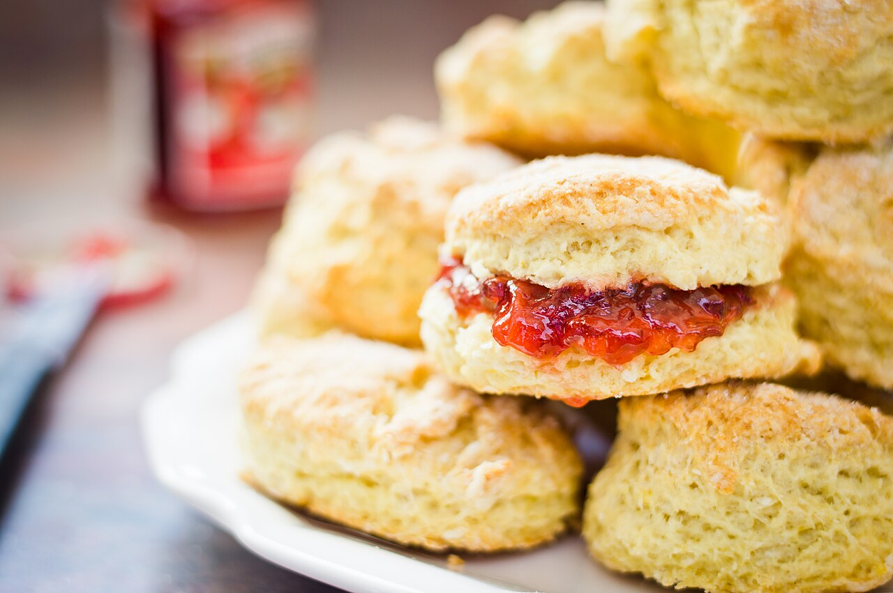

Scones: The most resplendent of snacks

Ocassionally maligned and misunderstood; the scone is a quintessentially British classic
Incredible scones, picture from Wikipedia
Recipe and serving suggestions follow
Ingredients:
- 350g self-raising flour, and a little spare for dusting
- 1/4 tsp salt
- 1 tsp baking powder
- 85g butter, cut into cubes
- 3 tbsp caster sugar
- 175ml milk
- 1tsp vanilla extract
- Squeeze lemon juice (see Know-how below)
- Beaten egg, to glaze
- Jam and clotted cream, to serve
Method:
- Heat the oven to 220°C (or gas mark 7). Tip the flour into a large bowl along with the salt and baking powder, then mix it all up.
Add the butter in, then rub the butter in with your fingers until the mix looks like fine crumbs. When that is done, stir in the sugar
- Put the milk into a jug and heat in the microwave for about 20-30 seconds. It should be warm but not hot. Add the vanilla and lemon juice
to the milk and then put that to one side and but a baking tray in the oven to warm.
- Make a well in the dry mix, then add the liquid and combine it quickly with cutlery knife - it will seem pretty wet at first. Spread some
flour onto the work surface and tip the dough out. Dredge the dough and your hands with a little more flour, then fold the dough over 2-3
times until it's smoother. Now pat it into a round shape about 4cm deep.
- Take a 5cm cutter (Pro-tip - smooth-edged cutters tend to cut more cleanly, giving a better rise) and dip it into some flour. Plunge into
the dough, then repeat until you have four scones. By this point, you'll probably need to press what's left of the dough back into a round
to cut out another four
- Brush the tops with beaten egg, then place onto the hot baking tray
- Bake for 10 minutes until risen and golden at the top. Eat just warm or cold on the day of baking, generously (and I do mean generously)
topped with jam and clotted cream.
- If freezing, freeze once cool. Defrost, then put in a low oven (about 160°C) for a few minutes to refresh